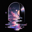
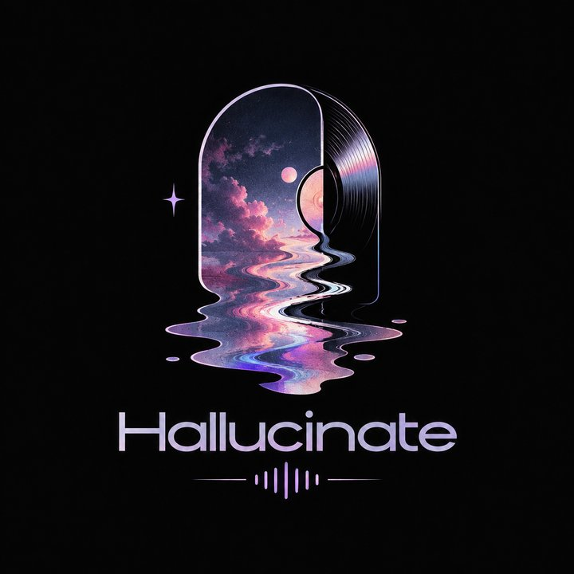

Instant search
Artists, albums and songs appear as you type, grouped and ready to play, even across huge libraries.

HallucinateVersion {{VERSION}} · {{RELEASE_DATE}}
Type to find any artist, album or song, click to play. Gapless, beautifully themeable, and entirely yours: no account, no cloud, no ads.
Linux · Windows · macOS · free and open source (MIT)


Built for people with a folder full of music they love, from a few albums to fifty thousand tracks.
Artists, albums and songs appear as you type, grouped and ready to play, even across huge libraries.
True gapless playback, crossfade, ReplayGain and a 10-band equalizer. FLAC, MP3, AAC, ALAC, Ogg, Opus and more.
When the queue runs out, similar songs from your own library keep playing, picked from your listening history, artists, genres and eras.
Playlists that build themselves from rules: "liked songs I haven't heard in two months", "jazz before 1970", and anything in between.
Media keys and system media controls on Linux and Windows, a tray icon, a mini player and an output device picker.
Live-switchable themes like Catppuccin, Nord, Gruvbox, Tokyo Night and Dracula, your own custom themes, and an album-art accent.
Synced lyrics, a tag editor with cover art lookup, listening stats, a spectrum visualizer, and optional Last.fm, ListenBrainz and Discord.
Your library, playlists and listening history stay on your computer. Scrobbling and Discord are strictly opt-in.
Every screenshot here is rendered straight from the app.


Free forever. Pick your platform.
Windows 10 or 11, 64-bit. Media keys and the system media overlay work out of the box.
Download installerNot code-signed yet, so SmartScreen may warn: choose More info → Run anyway. A portable zip is also available.
An AppImage that runs on any modern x86-64 distribution, with everything bundled.
Download AppImageMake it executable, then run it: chmod +x Hallucinate-x86_64.AppImage. Flatpak and Arch (AUR) packages can be built from source.
A native app for Apple silicon Macs (M1 and newer).
Download for MacUnzip and move Hallucinate to Applications. It isn't notarized yet, so if macOS blocks it the first time, allow it under System Settings → Privacy & Security → Open Anyway.
Other options: install with pip · all releases and checksums · source code